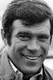
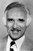

Country:United States, 97 minutes
Spoken languages:English
Genres:Sci-Fi, Mystery
Director(s):William Castle
Writer(s):Leslie P. Davies, Edmund Morris
Video Codec:Unknown
Number: 2976


Certification:
Storyline:
A spy is brought back from cryogenic suspension after being almost killed in a plane crash returning from a mission to learn about a deadly new weapon being developed in the East. But the vital memories are being suppressed, so the authorities use ultra-advanced technologies to try to uncover the secret.
Cast:  
Medium: Original DVD,
Loaned: No
Aspect ratio: Unknown